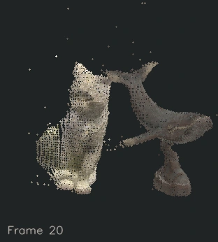
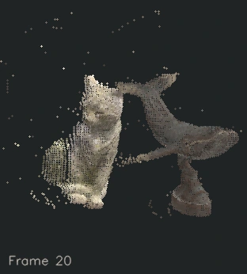
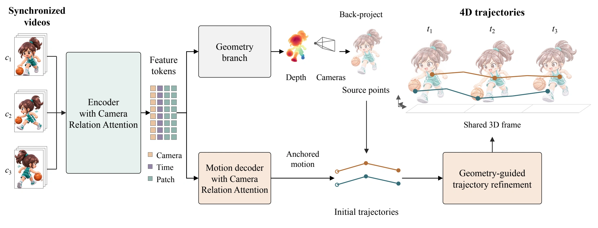

Multi-View 4D
Reconstruction
and Tracking
From unposed multi-camera videos
MVMC reconstructs a moving scene in 3D and follows points across time and cameras from synchronized RGB.
Explore in 3D
Orbit the reconstructions, scrub through time, and follow the predicted 3D tracks. Use the static background toggle to inspect the motion on its own.
Flambéing salmon

Loading the 3D scene…
Scene and reference details
The viewer shows subsampled MVMC point clouds and trajectories. Display alignment and reference data vary by scene.
Motion gallery
See point clouds and tracks through object manipulation, articulated motion, and traffic. Open a scene to play the clip and scrub through its frames.
Compare reconstruction and motion
Choose a scene and two methods. Switch between the point cloud at the displayed frame and trajectories over the full clip.



Multi-camera tracking results
Four synchronized RGB views per clip. We evaluate 3D trajectories in the first camera’s frame with one query-anchor scale per clip.
| Method | APD ↑ | 10 cm ↑ | 20 cm ↑ | EPE ↓ | AJ ↑ | OA ↑ |
|---|---|---|---|---|---|---|
| MVMC | 89.24 | 67.21 | 87.66 | 0.1118 | 62.79 | 73.22 |
How MVMC works
Camera identities and shared frame indices organize the input. The model estimates camera parameters and depth together with a trajectory for each queried source pixel.

Encode across views
Camera Relation Attention uses camera identity to connect observations across cameras and time.
Anchor motion in 3D
Predicted geometry anchors each point at its source frame. Time-conditioned decoding predicts its displacement.
Refine and test visibility
Local image evidence from the target views refines the trajectory. The Visibility Head estimates its visibility per camera.